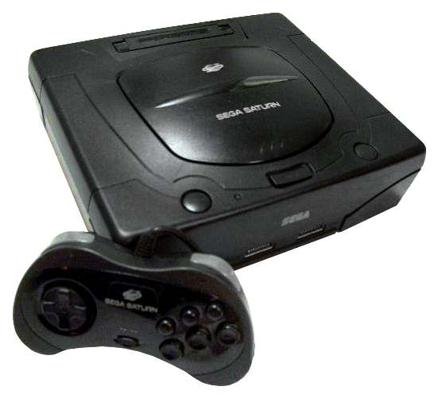

SEGA
SATURN

Resumo
Sega Saturn foi um console de jogos eletrônicos de quinta geração, lançado pela empresa Sega em 22 de Novembro de 1994. Foi o sucessor do bem sucedido Sega Genesis. Seus jogos utilizam a mídia CD-ROM e sua biblioteca de jogos contou com várias portes de jogos de arcade e também jogos originais desenvolvidos para o console.
Jogos
O SEGA Saturn possui vários titulos memoráveis. Exemplos são: Virtua Fighter 2, NIGHTS Into Dreams, Sonic R, Tomb Raider, Daytona USA, Marvel vs Capcom, Dragon Force, Guardian Heroes e entre vários outros grandes títulos.